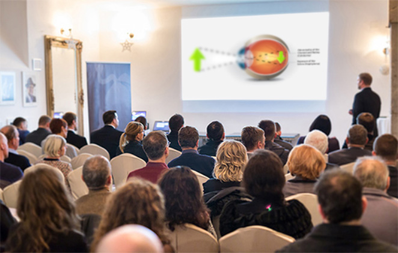
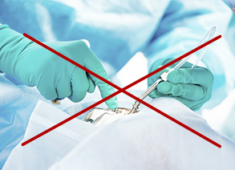

a látás élességének javulása 400%-kal
Vége a korrekciós szemüvegek korának!
A forradalmi magyar felfedezés természetesen adja vissza a tökéletes látást 28 nap alatt

Lehetséges, hogy az új látásregeneráló módszer tönkre teszi a korrekciós szemüvegek piacát? A szemészet kiemelkedő szakértői szerint ez teljesen bizonyos. A magyar tudós által kidolgozott természetes rácsos szemüveg elhozta a régóta vágyott áttörést a látásproblémák kezelésében.
már több mint 14 ezer emberen segített, akik 28 nap alatt regenerálták a látósejtjeiket, és megmenekültek a műtéttől. A látásuk olyan lett, mint 20-25 éves korukban. A rácsos technológia 28 nap alatt visszaadta látásuk 100%-os hatékonyságát, és 400%-kal élesítette azt, és elejét vette számos kellemetlen tünetnek, mint a szürkehályog, az asztigmatizmus, a rövid- vagy a távollátás. A súlyosan látássérültek esetében is. Hogyan lehetséges ez?
Kováts Kristóf professzor (a harcászatban alkalmazott biotechnológia szakértője) eldöntötte, hogy megszabadítja Édesanyját előrehaladott látásvesztésétől. Ez volt a szemészeti forradalom kezdete. Egy évnyi előrehaladott kutatás után a professzor kifejlesztett egy 100%-ban biztonságos, gyors és rendkívül egyszerűen használható rácsos szemüveget.
Az orvosi szaklapok ezt a kezelést már „a szemészet áttörő felfedezéseként” említik, és a professzor számos nagy presztízsű díjra kapott már jelölést. A módszere nem csak 400%-kal élesíti a látást, elmulasztja a zöldhályogot, az asztigmatizmust, de visszaadja a látás teljes kényelmét. A legújabb katonai technológia alkalmazásának köszönhetően a sejtközi regenerációs folyamatok beindítása a szem sejtjeinek mélyén lehetővé vált. Ennek eredményeképpen megfiatalítja a szem sejtjeit, és garantálja, hogy a látásgondok soha többé nem térnek vissza.
"A hagyományos módszerek a látás javítására nem többek pénzkidobásnál!" Milyen módon előzhetjük ezt meg?
Ezeket a szavakat több, mint 14 ezer elégedett felhasználó erősíti meg, akik az új, nem invazív módszer segítségével visszanyerték a látásukat, és elhagyhatták a szemüvegeiket. Ezért döntöttünk úgy, hogy górcső alá vesszük ezt a készüléket. Megvizsgáltuk az előnyeit és a hátrányait, valamint összehasonlítjuk azt, hogy mivel kell megküzdeniük azoknak, akik vissza szeretnék kapni 100%-os látásukat. Az eredmény a következő:
-
A szemüveg megnyugtatja a szemet
Amikor felteszed a szemüveget, azonnal tisztábban látsz, ez tény. De mi történik akkor, amikor leveszed a szemüveget? A világ ismét homályos lesz. A szemész csak azt ismételgeti, hogy a látásod romlani fog, és csak egyre erősebb szemüvegeket fog felírni... Ez egy ördögi kör. A szem a lencsék feltétele után nem dolgozik, mivel a szemüveg mindent elvégez helyette. Ennek eredményeképpen leáll a működése, és a látásért felelős sejtek folyamatosan elgyengülnek. Lehet, hogy egy kis időre jobban látsz, de folyamatosan veszted el a látásodat...
-
A gyógyszerek mérgezik és tönkreteszik a szervezetet
A mesterséges kemikáliák folyamatos szedése teljesen a természet ellen való. Számos mellékhatást is eredményezhet. Többek között gyomorproblémákat, hallásvesztést és a vesefunkciók romlását. Az akut májproblémák 35%-a a kemikáliák következtében alakul ki. Beveszed a tablettát, valamivel tisztábban látsz, de ki leszel téve a gyomor és a máj sérüléseinek. Ez nevetséges, és teljesen értelmetlen.
-
A lézer borzasztóan drága
A lézeres szemműtét 300 ezertől 1 millió forintig terjedhet. Egy szemre, és csak egy alkalomra, és több műtétre is szükség lehet. Még akkor is, ha megengedhetsz magadnak ekkora kiadást, tudnod kell, hogy az ilyen műtétek hatékonysága alig 27%. Ez azt jelenti, hogy az ilyen műtéten átesett emberek 73%-nak ismét szemüveget kell majd viselnie., vagy újra kifizetnie a kezelés árát...
-
A kontaktlencse nem biztonságos
Az, hogy valamit a szemedbe tegyél, nevetséges ötlet. TUdnod kell, hogy a kezeden több ezer baktérium, vírus és gomba él. A lencsével együtt ezeket is berakod a szemedbe, ahol tökéletes kondiciók várják őket a létfenntartásukhoz. Irritálják a szemet, és súlyos szövődményekhez vezetnek.
-
A szemmasszázs nem működik
A XX. század elején egy amerikai üzletember előrukkolt egy módszerrel, amely minden látáshibát eltüntetett állítása szerint. És ez rendkívül gazdaggá tette. Ez a módszer az úgynevezett szem-jóga volt. Hatékonyságát sosem igazolták kutatásokkal. Egy teljes hazugság volt, amit a gyors profitért csinált. Ne hagyd magad átverni, és ne szórd el a pénzedet.
Éppen ezért Kováts professzor rácsos módszere igazi áttörés a látásjavítás terén
A hagyományos látásjavító módszerek vagy hatástalanok, vagy drágák és veszélyesek. De a leggyakrabban ez mind egyszerre. A javulás hamis látszatát keltik, és figyelmetlenné tesznek, miközben a szemed romlik, és egyre rosszabbul látsz. Ugyanakkor Kováts professzor rácsos technológiája nem csak azonnal működik, de a problémát a gyökerénél szünteti meg. Másfelől 400%-kal javítja a látás élességét, eltünteti a szürkehályogot és az asztigmatizmust, és javítja a szürkületben való látást is, 280%-kal. Alig 28 nap alatt garantálja a szemgolyó teljes regenerációját. Ennek köszönhetően minden egyes sejtet megfiatalít, és garantálja, hogy a szemproblémák sosem térnek vissza. Ennek eredményeképpen lehetővé teszi a látás 100%-os hatékonyságának visszaszerzését – szemüvegek és drága műtétek nélkül.
Most bárki visszakaphatja 100%-os látáshatékonyságát
Kováts professzor rácsos módszere már kereskedelmi forgalomban is elérhető néven. Szuperkönnyű és szuperhatékony ajurvédikus szemüveg formájáz kapta, melyet úgy kell hordani, mint a hagyományos szemüvegeket. Mindazonáltal jelentősen különbözik a hagyományos szemüvegektől. A extra könnyű, bioaktív anyagokból készült,viselése rendkívül kényelmes. A lencsék helyett, melyek tönkretennék és elkényelmesítenék a szemet, a -on egy lyukacsos lap található. A precízen elhelyezett lyukak arra sarkallják a szemet, hogy a központra fókuszáljon, így a fények pont a retinába jutnak. Ennek köszönhetően a szem folyamatosan könnyű és relaxáló edzéseket végez. A látás automatikusan visszatér, erőkifejtés, elvesztegetett idő és pénz nélkül.
A használata teljesen biztonságos a szervezet számára, amit számos vizsgálattal is megerősítettek, többek között egy amerikai kutatóintézetben Philadelphiában. Ezek a vizsgálatok többek között azt is kimutatták, hogy a kúra hatékonysága eléri a 98%-ot. Ennek köszönhetően a 27-98 éves kor közötti korosztály alig 28 nap alatt visszanyerte látásának 100%-os hatékonyságát , 400%-kal élesítették a látásukat, és számos egyéb tünettől is megszabadultak (zöldhályog, asztigmatizmus, rövid-, és távollátás). Függetlenül az életkortól, a probléma okozójától és annak hosszától.
Igazolt hatékonyság
Ezek az emberek Kováts professzor rácsos technológiájának alkalmazása után 400%-kal élesítették a látásukat, és könnyedén elolvassák az újságot, és gond nélkül nézik a tévét. Mindezt kényelmetlen és nagy szemüvegek viselése nélkül! A következő napokban ezen személyek erősítették szemük érzékenységét a mozgásokra és a színekre, amelynek köszönhetően a legapróbb részleteket is észreveszik. A szürkületi látásukat is 280%-kal javították. Megszűnt a fejfájás és az egy egyensúlyzavarok is elmúltak, melyeket a látásproblémák okoztak. Alig 28 nap után meglepve tapasztalták, hogy mindent tökéletesen tisztán látnak, és a részletes kutatások alapján a szürkehályog és az asztigmatizmus is eltűnt.
Ugyanakkor ezek csak a külső jelek, melyek szabad szemmel is érzékelhetőek. A vizsgált alanyok szemgolyójában a látósejtek intenzív regenerációja indult be, már az ajurvédikus szemüveg első alkalmazása után. Ennek köszönhetően minden egyes sejtjük átlagosan 40 évet fiatalodott, és visszatért teljes hatékonyságához. Ebből fakadóan azon személyek, akik használták a módszert, biztosítékot kaptak arra, hogy a látásproblémák nem fognak visszatérni. Az ajurvédikus szemüveg alig 28 napon át történő használata után a tesztelők elismerték, hogy javult a látásuk. Ma éppen olyan élesen látnak, mint 20-25 éves korukban! Minden részletet látnak, és semmi nem kerüli el a figyelmüket.
A Kováts professzor kezelésének 28 napos használata során dokumentált eredmények, magukért beszélnek
a szem érzékenységének növelése a színekre és a mozgásokra
a sötétben történő látás élesedése 280%-kal
a 20-25 éves kori látás élességének visszatérése
1. hét
2. hét
3. hét
4. hét
1. hét – 400%-kal élesebb látás (közelre és távolra egyaránt)
2. hét - a szem és a szemmozgató izmok sejtjeinek regenerációja, a szem érzékenységének javítása a színekre és a mozgásra
3. hét - a látás élességének 280%-os javítása sötétedés után, a fejfájások és az egyensúlyzavarok csökkenése
4. hét - a szem minden sejtjének megfiatalítása, átlagosan 20 évvel, a 20-25 éves kori látásminőség visszaállítása
Berecki Imre (71 éves), Debrecenből egyike az első magyaroknak, akik használták a -et:
"A látásproblémáim már régóta tartottak, nagyjából 40 éves korom óta. De az ember mindig ámítja magát. Minél fáradtabb vagy, annál rosszabbul látsz - mondogattam magamnak. Az is köztudott, hogy a korral a látás romlik. De nálam elviselhetetlen volt. Évek óta szenvedtem a szívproblémáimmal, és rengeteg tablettát kellett bevennem. Egyszer észrevettem, hogy már azt sem tudom elolvasni, hogy mi van a dobozra írva, és véletlenül a rossz gyógyszert szedtem be. Katasztrófa! Egyből be kellett mennem a gyógyszertárba gyomormosásra. Az orvos azt mondta, hogy ha egy perccel később érkezem, talán már nem is élnék.
Aztán elmentem egy specialistához, akitől szemüveget kaptam. Olyan lencsékkel, mintha szódásszifon lenne a szememen. A látásban szinte semmit nem segített, de zavart a munkában (a feleségemmel egy gyümölcsöskertünk van). Nem akartam műtétet, és lézert sem akartam a szemembe lövetni. Szerencsére a feleségem megtalálta nekem a -et, még időben. Kevesebb, mint egy hónap elég volt, és elmúlt a problémám... Most minden részletet látok, még azokat a szövegeket is el tudom olvasni, amit kisbetűvel írtak. A szemüvegek a polcon porosodnak, és a feleségemmel azon nevetünk, hogy fiatalkoromban sem láttam ilyen jól. Mintha újjászülettem volna. Hálás köszönetem!"
Miért kéne egy vagyont költeni haszontalan módszerekre, ha természetesen és olcsón is visszanyerhető a látás?
A hatékonyságát minden kétséget kizáróan bizonyította egy amerikai kutatóközpont Philadelphiában. Kováts professzor folyamatosan kapja a jelöléseket a legnevesebb díjakra, beleértve a World Supervision Award (WSA) díjat is.
A jó˛hír az, hogy a a kedvezményklubban való részvételért ártámogatással kapható, -kal olcsóbban. A pénzügyi támogatás mindenkit megillet, aki 1938 után született. A kizárólag ezen az oldalon keresztül szerezhető be.
Kattints ide, hogy megkapd a-t a támogatással, és szerezd vissza látásod 100%-os hatékonyságát>>
A speciális ajánlat érvényessége lejár csütörtök
Hozzászólások
"Vége a korrekciós szemüvegek korának! A forradalmi magyar felfedezés természetesen adja vissza a tökéletes látást..."
Tamás 2020
és még azt mondják, hogy a magyarok nem jutnak semmire világszinten. nagyszerű eredmény Szent-Györgyi Albert szellemében. szép munka, barátom
Barbara 2020
én használtam ezt az ajurvédikus szemüveget, én is a kedvezményklubból szereztem be, nem volt drága, és jobban látok! mintha kicseréltek volna, őszintén ajánlom mindenkinek
Móni 2020
nekem itt valami nem stimmel. mé kel hozzá pont 28 nap? hülyeségnek hangzik
zsófia 2020
@Móni, ha egy kutatóintézet klinikai vizsgálatokat végez, az eredményeket időben adják meg. Ezek a kutatási irányelvek. Az átlagos tesztcsoport nyilvánvalóan 28 napig használta. Ez egy látványos hatás. Különben is...
József 2020
kérem szépen.... Elmondhatom magamról, hogy tényleg éveken át próbálkoztam a különböző szemüvegekkel, pontosan 6 éven keresztül. a nyomdai munka tönkretette a látásomat. A szemüvegekre olyan 300 ezret dobtam ki, ami még nem is sok, de egy nyugdíjasnak éppen elég kiadás. És mindig oda kell figyelni a szemüvegre, hogy nálam legyen, különben a feleségemet sem ismerem meg. Három hete a lányomtól kaptam ezt a rácsos szemüveget, és végre ismét jól látok!!! Tényleg visszatért a látásom!! azt nem tudom hogy mindenkinél működik-e, de nálam biztos! érdemes kipróbálni!
András 2020
A -et is használtam, és teljesen elégedett vagyok. Még csak két hete használom, de már most sokkal jobban látok. nem kell szemüvegben ülnöm a tévé előtt, vagy mikor olvasok. Végre úgy tudok élni, mint egy normális ember
mária 2020
Amikor megnyitottam az oldalt, nem hittem hogy ilyen csodáról fogok olvasni. Nekem is kellett ez a kúra! Elegem volt az otromba szemüvegekből, amikben úgy nézek ki, mint egy légy. Az unokáim is féltek tőlem, borzalmas dolog volt. De istenem, ezzel nekem is sikerült. KÖSZÖNÖM
Honorata 2020
egy állami hivatalban dolgozom, ahol nincs megállás. Gyakran előfordult, hogy a rossz látásom miatt hibáztam. A felettesem belengette azt is, hogy talán év végén elbocsátanak, ezért vettem valami szemüveget. Pedig nekem jól kellene kinéznem. Még nem vagyok olyan öreg, férjem sincs. Ha meg is tetszett valaki, az otromba szemüveg azonnal elijeszti. És most végre mégis olyan lesz, mint a szappanoperákban... végre megváltozott az életem! köszönöm-köszönöm! :))
Mihály 2020
@Barbara az ilyen helyzetekben egyáltalán nem számít, hogy nézel ki. De igazad van, hatalmas különbséget fogsz érezni, amikor átesel a kezelésen. Nagy látáskárosodásom volt, így másfél hónapot kellett használnom, hogy visszanyerjem a látásom 100%-át. de boldog vagyok, végül jó munkát találtam, és emberek közé is járok. Ugyanezt kívánom
Anna 2020
Az édesanyám már öregszik, szóval az idősebb korosztályt kérdezném, aki használja ezt. hány évesek vagytok, vannak 80 év fölöttiek itt, vagy a családban? Szeretném tudni, hogy van-e esélye Édesanyámnak. Gyakorlatilag semmit nem lát, és ez állandó probléma. Egyszer rossz buszra szállt föl, és a másik végállomásig ment. Rémálom, de nagyon együtt érzek vele. Kérlek, válaszoljatok. Ancsi
Róbert 2020
@Ancsi nálunk a látásprobléma örökletes, ezért én is, és apukám is használtuk, aki már 93 éves. Neki rengeteget segített három hét alatt. Már nem aggódom miatta mert remekül megvan. Szóval anyukádnak is segíteni fog
Anna 2020
@Róbert szuper! Köszönöm szépen a válaszodat. ebben az esetben adok egyet Anyunak ebből a fantasztikus ajurvédikus szemüvegből.
Zita 2020
én is használtam, kábé 15 évet fiatalodott vele a látásom :) üdv, ajánlom
eva 2020
legszivesebben azonnal megvenném, de félek, hogy nem fog működni Találkoztam már elég hatástalan szerrel életemben
eva 2020
o!! Most olvastam, hogy háromszoros elégedettségi garancia is van rá, így nincs mitől félnem. Kipróbálom magamon aztán szólok milyen :)
Antal 2020
Én még fiatal vagyok, 36 éves, nem a látásommal van baj, de minden nap számítógép előtt dolgozom és azért kezdtem használni a , preventív jelleggel. Meg akarom előzni a későbbi bajokat. Szóval, aki számítógép előtt dolgozik, annak ajánlom
félix 2020
én már a kézbesítést várom, aztán a hatását